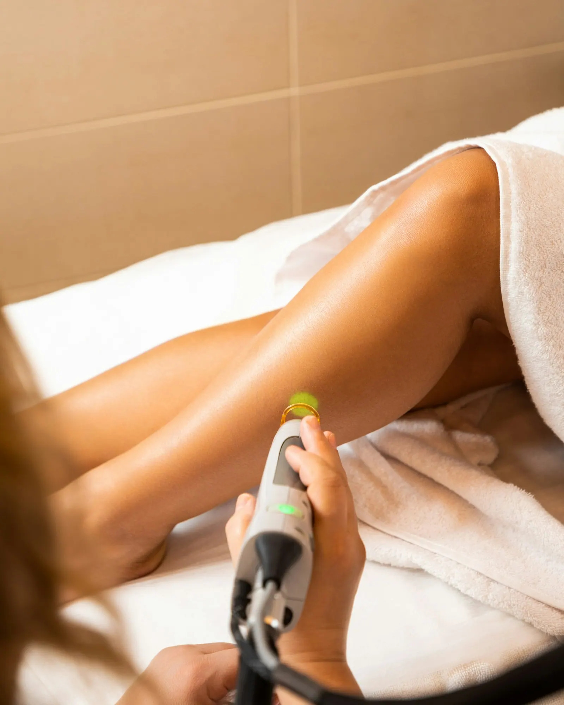
Laser ontharingVoorgoed glad
Benen, oksels, bikinilijn of gezicht. Na een reeks behandelingen hoef je amper nog te scheren of te harsen.
Plan een eerste sessie →Laser ontharen, permanente make-up, een verzorging voor je gezicht of mooie wimpers. Bij GooDLN neem je een uurtje voor jezelf en ga je buiten met een goed gevoel. Altijd op afspraak, zodat er tijd is voor jou alleen.
Van een gladde huid zonder elke week te scheren tot wenkbrauwen die er 's morgens al liggen. Kies wat je wil, of vraag gerust raad.

Laser ontharingBenen, oksels, bikinilijn of gezicht. Na een reeks behandelingen hoef je amper nog te scheren of te harsen.
Plan een eerste sessie →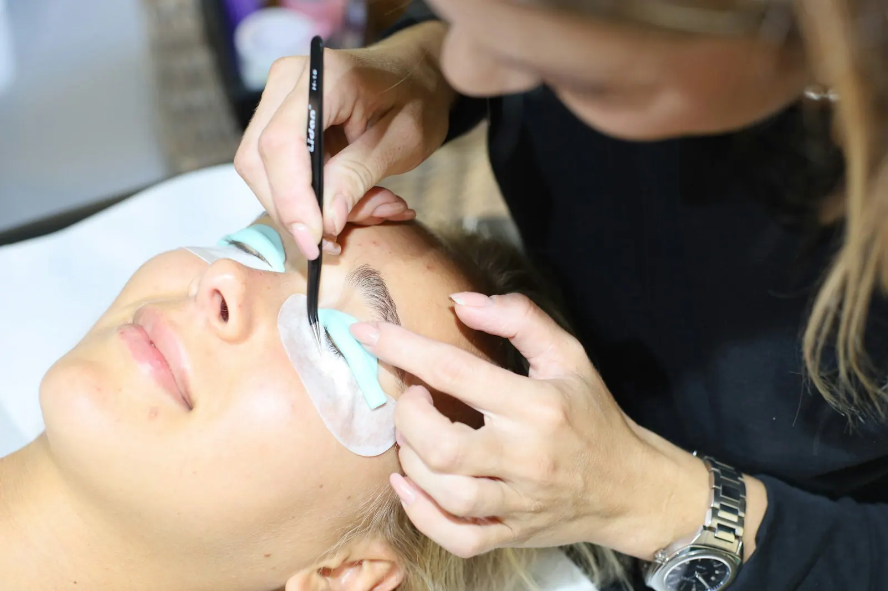
Permanente make-upZachte, gepoederde wenkbrauwen die bij je gezicht passen. Geen potlood meer 's morgens, ook niet na het zwemmen.
Vraag een gesprek →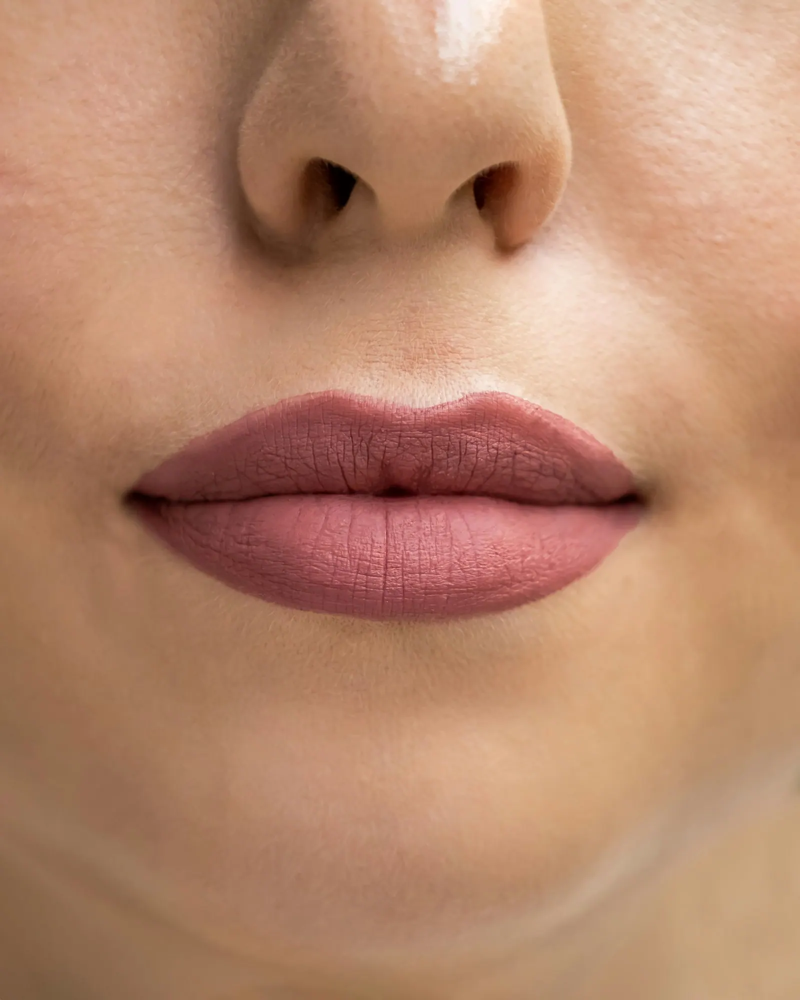
Permanente make-upEen frissere kleur en een mooie lijn voor je lippen. We kiezen samen een tint die bij jou past, van heel natuurlijk tot iets uitgesprokener.
Vraag een gesprek →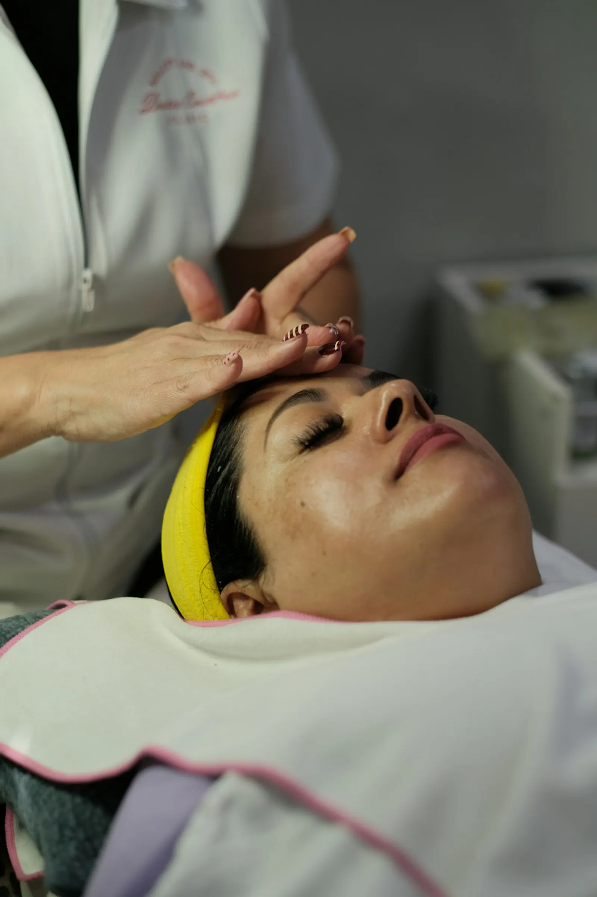
GelaatReinigen, een masker en een rustige massage. Een uurtje waarin je even niets moet, en een huid die weer ademt.
Boek een verzorging →Diep reinigen en tegelijk vocht geven. Fijn voor een doffe huid, of gewoon voor een feest of een belangrijke dag.
Boek een hydrafacial →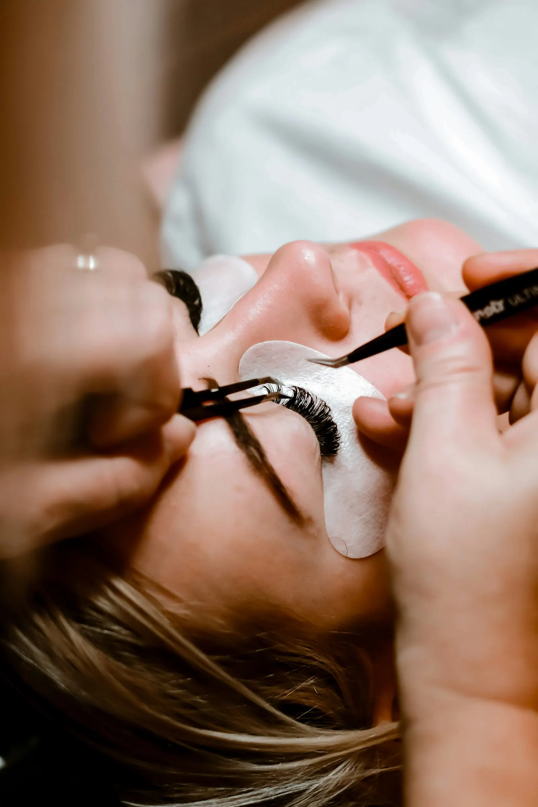
WimpersEen lift voor je eigen wimpers, of extensions voor meer volume. Wakker worden en er meteen verzorgd uitzien.
Plan je wimpers →Ook voor lichaamsbehandelingen en afslanken kan je bij ons terecht. Vraag gerust wat de mogelijkheden zijn.
Tik aan wat je herkent. Je ziet meteen welke behandeling erbij past, en met één klik staat ze klaar in je afspraakaanvraag.
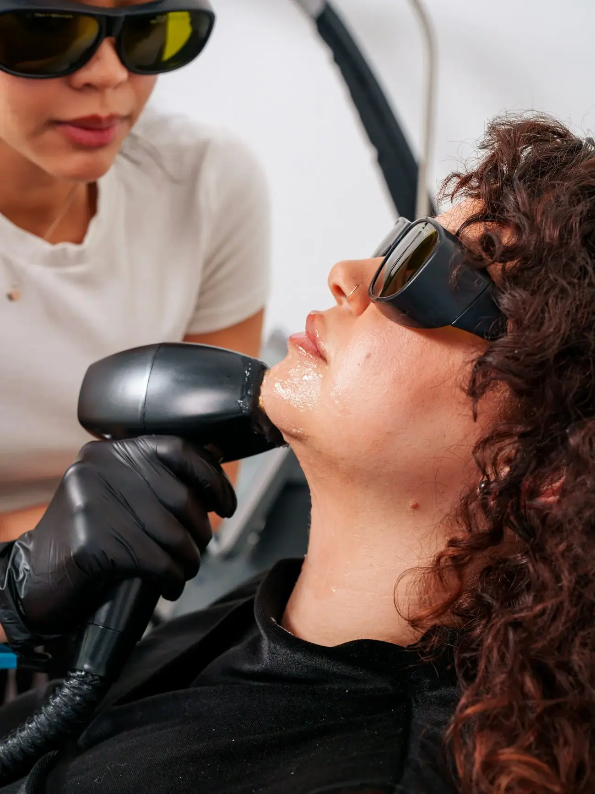
Je haartjes worden bij elke sessie fijner en minder. Na een reeks ben je het meeste kwijt.
Bij permanente make-up wil je zeker zijn. Daarom begint alles met een gesprek: we kijken naar je gezicht, je huid en wat je mooi vindt. Je kiest pas als je helemaal gerust bent.
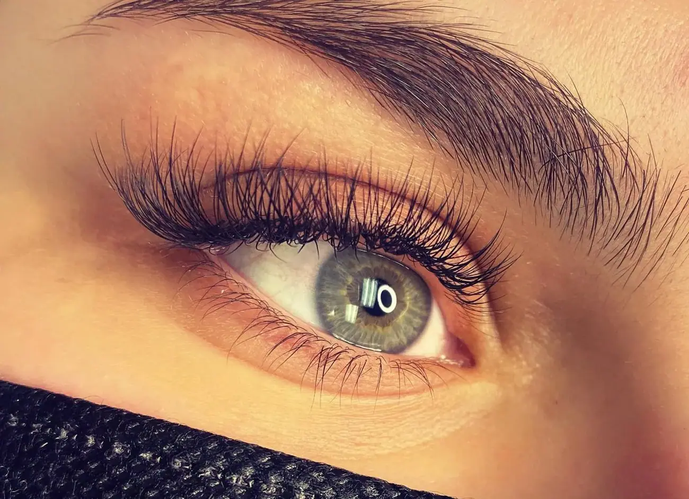
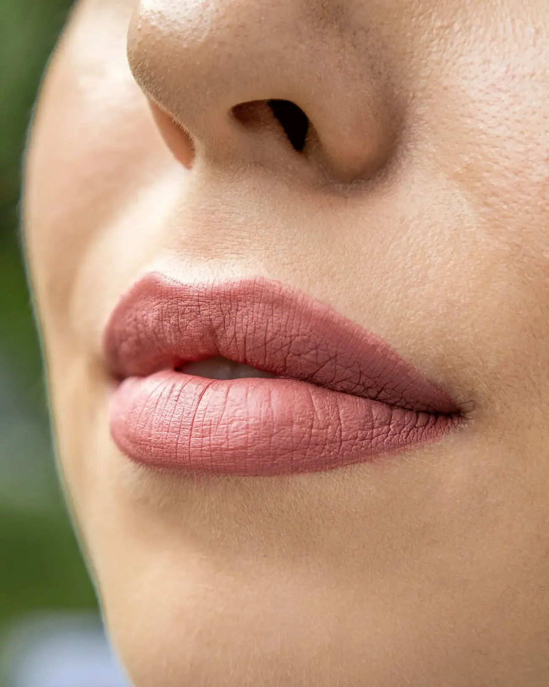
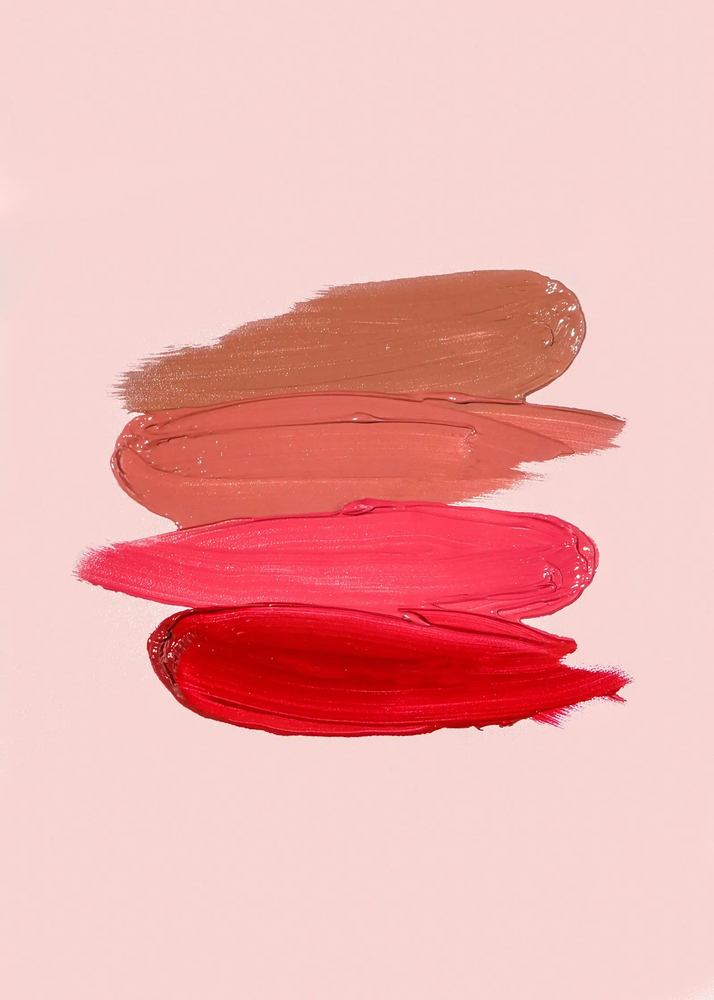
Op vakantie, voor een feest of gewoon voor jezelf. Met laser ontharen worden je haartjes bij elke beurt fijner en minder, tot je er amper nog naar omkijkt.
29 klanten lieten een review achter op Google. Gemiddeld 4,9 op 5.
Ik kom hier steeds met een goed gevoel buiten. Heel vriendelijke dame, aan betaalbare prijzen.
Sandra Deloofvia GoogleHeel eerlijke en vriendelijke dame, bij haar zit je in goede handen.
Basma Bouselamtivia Google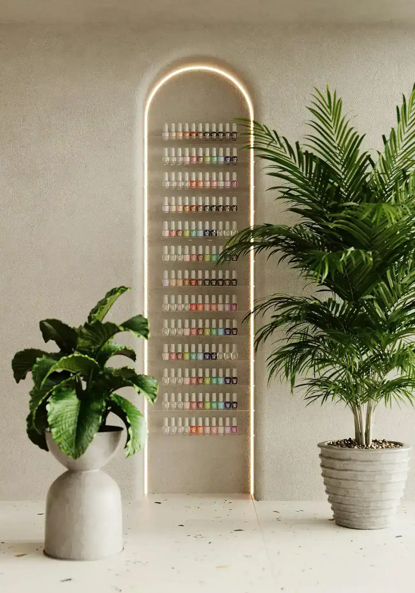
Twijfel je over wat bij je past? Vraag het gerust. Je krijgt een eerlijk antwoord.
Je vindt ons in de Kerkstraat, in het centrum. Je herkent de salon aan de grote ramen met het gouden logo.
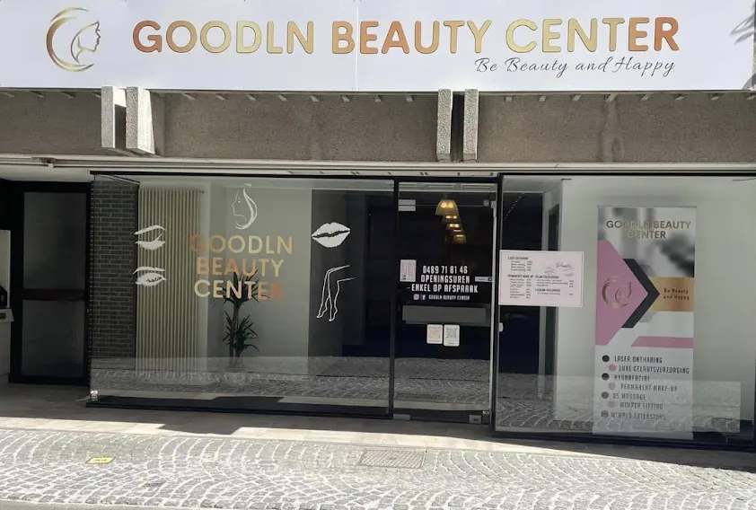
We werken enkel op afspraak. Bel of stuur een berichtje.
| Maandag | 09.30 tot 18.30 |
| Dinsdag | 09.30 tot 18.30 |
| Woensdag | 09.30 tot 18.30 |
| Donderdag | 09.30 tot 18.30 |
| Vrijdag | 09.30 tot 18.30 |
| Zaterdag | 10.00 tot 14.00 |
| Zondag | Gesloten |
Laat weten wat je graag wil en wanneer het je past. Je krijgt snel een berichtje terug om het uur vast te leggen.
Meestal een aantal jaar. De kleur vervaagt heel geleidelijk, dus je ziet nooit van de ene dag op de andere een verschil. Wil je ze weer wat voller, dan kom je voor een opfrissing.
Dat hangt af van de zone, je huid en je haar. Bij het eerste bezoek kijken we samen wat je mag verwachten. Reken op een reeks, met telkens enkele weken ertussen.
Scheer de zone de dag ervoor. Epileren of harsen doe je beter niet in de weken voordien, want dan is er geen haarwortel meer om te behandelen.
Zeker. Zeker voor wenkbrauwen of lippen raden we dat aan. Zo weet je precies wat er gebeurt voor je iets beslist.
Ja, op zaterdag werken we van 10 tot 14 uur. Plan gerust een week op voorhand.
Bellen of een WhatsApp naar 0489 71 81 46 gaat het snelst. Je kan ook het formulier hierboven invullen.
Ik maakte deze demo voor jullie om te tonen wat er kan. Na een kort gesprek maak ik er iets veel persoonlijkers van, helemaal naar jullie wens.
Vrijblijvend. Ik kom langs of we bellen.
Op maat, op jullie eigen domein.
Geen voorschot. Jullie betalen pas als alles klaar is.
Hosting, domeinnaam en kleine wijzigingen, zoals nieuwe openingsuren.
Omdat een voorbeeld meer zegt dan een mail. Zo zien jullie meteen wat er kan, en het kost jullie niets.
Nee. Het gesprek is vrijblijvend. Vinden jullie het niks, dan is het daarmee gedaan.
Na ons gesprek staat jullie site binnen 10 tot 14 dagen online.
Zeker. Jullie domeinnaam kan gewoon blijven, de nieuwe site komt in de plaats van de oude.
Nee, dat doe ik op basis van ons gesprek. Eigen foto's zijn mooi meegenomen, maar niet nodig om te starten.